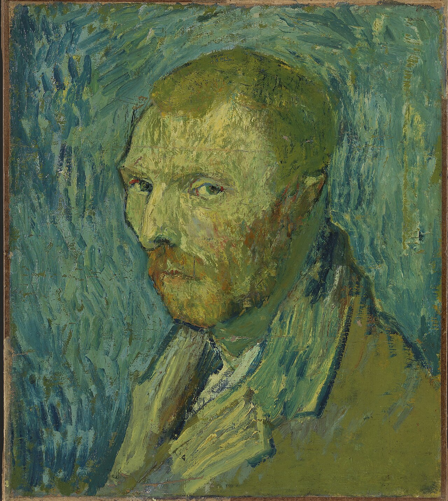

Fig. 1 — Vincent van Gogh, Self-Portrait, 1889, olio su tela, 51,5 × 45 cm. National Museum, Oslo.
Van Gogh a Theo, 20 settembre 1889 (lettera 805), in riferimento al confronto con quello inviato al fratello. Fonte: Van Gogh Letters Project — traduzione inglese.
| Autore | Vincent van Gogh |
|---|---|
| Data | 1889 |
| Tecnica | olio su tela |
| Dimensioni | 51,5 x 45 cm |
| Catalogo | F528/JH1780 |
| Collezione | National Museum, Oslo |
| Luogo di creazione | Saint-Rémy-de-Provence |
Questo dipinto, realizzato anch'esso durante il ricovero, è stato comprato dal National Museum di Oslo nel 1910, classificandosi come primo autoritratto di Van Gogh in assoluto a entrare a far parte di una collezione pubblica nazionale. Per decenni, a partire dal 1970, l'autenticità di questa tela è stata apertamente messa in dubbio a causa della sua palette insolitamente cupa e dell'uso del colore ritenuto atipico. Tuttavia, nel gennaio del 2020, dopo anni di accurati esami tecnici, stilistici e storici condotti dagli esperti del Van Gogh Museum di Amsterdam, il dipinto è stato dichiarato "inconfondibilmente" autentico, trovando oltretutto riscontro nella lettera 805 in cui Van Gogh stesso descriveva la tela al fratello Théo come "un tentativo di quando ero malato". L'artista si dipinge qui con lo sguardo rivolto di traverso, in un'espressione tipica di chi attraversa una profonda fase di depressione e psicosi. Per quanto concerne le cromie, a dominare sono colori fangosi e opachi, con sfumature verdastre che riflettono lo stato di profondo malessere mentale ed emotivo vissuto in quelle settimane.
Arricchimento — record di autorità
File collegati
Risorse esterne